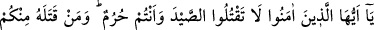
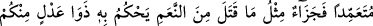
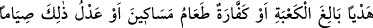
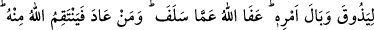
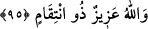

Sevgilinin bağındaki bir dikene tahammül etmiyorsun?
Öyleyse sâdık talibin riyazatların meşakkatlerine tahammül etmesi, nefsini
şehvetlerden tezkiye edip arındırması ve Allah Teâlâ’nın haram kıldıkları bir tarafa, her
bulduğu helali bile yemekten sakınması gerekir. Çünkü insanın nefsini ve tabiatını ıslah
konusunda asıl amil, Allah Teâlâ’nın fazlı ve inayeti ise de oruç ve az yemek, bu konuda
güçlü vâsıtalardır.
Anlatılır ki bir derviş, şiddetli riyazatlardan sonra nefsine “Sen kimsin, ben kimim?”
diye sorar. Nefsi bu soruya “Sen sensin, ben de ben!” diye cevap verir. Bunun üzerine
derviş ikinci defa nefsini tezkiyeye koyulur. Öyle gayret eder ki, bu uğurda yaya olarak
defalarca hacca gider. Bütün bunlardan sonra nefsine aynı soruyu yine sorar. Aldığı
cevap birinci cevapla aynıdır. O zaman öncekilerden daha sıkı bir riyâzata başlar ve
çareyi yemeği azaltmada bulur. Sonuçta nefsinin kötü arzularını öldürmeyi başarır ve
ona aynı soruyu sorar. Aldığı cevap şöyledir: “Sen sensin, ben yok oldum ve artık
varlığımdan hiçbir eser kalmadı!” Böylece Allah Teâlâ’nın yardımıyla derviş huzura
erer...
Hz. Mevlânâ’ya “Tasavvuf erbabı masiyet işler mi?” diye soruldu. Cevap olarak
şöyle dedi: “Hayır, ancak tam acıkmadan yemek yemek müstesna. Bu onlar için zehir ve
hastalık demektir.”
Allahım, nefs-i emmâreyi ıslah etme konusunda bize yardım eyle!
95. Ey îman edenler! İhramlı iken avı öldürmeyin. Sizden kim onu kasden
öldürürse öldürdüğünün bir dengi hayvan cezâsı vardır. Bu içinizden âdil iki kişinin
hüküm vereceği, Kâbe’ye varacak bir kurban. Yahut (avlanmanın cezâsı), fakirleri
yedirme şeklinde bir keffâret ya da buna denk oruçtur. Ta ki böylece yaptığı işin
vebâlini tatsın. Allah geçmişi affetmiştir. Kim bu suçu tekrar işlerse Allah ondan
intikam alır. Allah azizdir, intikam alandır.